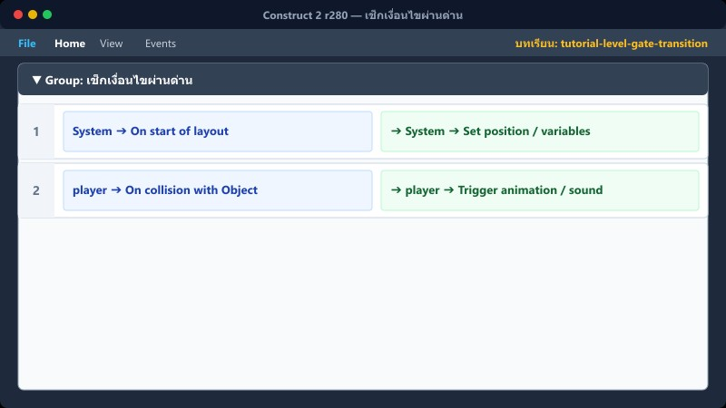
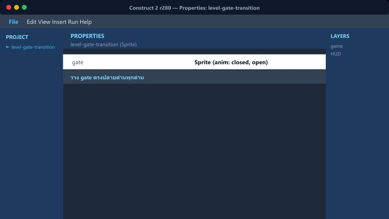
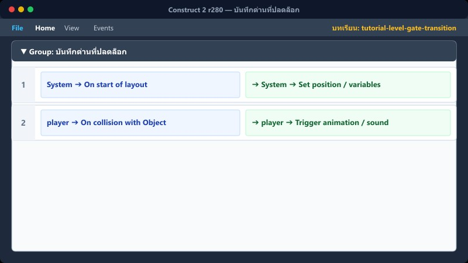
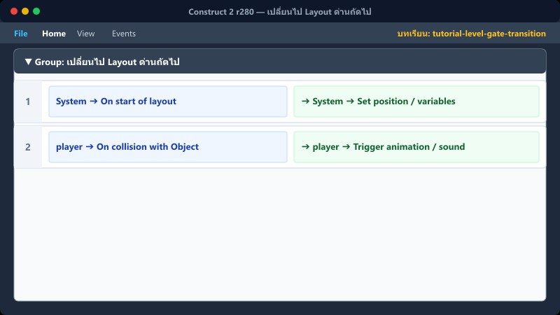

สถานะประตู: เปิด (Open)
🏃
➜
🚪
ตอบครบ 5 ข้อ→เปลี่ยนภาพประตู→ผู้เล่นเดินชน→ล็อกปุ่ม→เปลี่ยน Layout
1สร้าง Sprite ประตู
สร้าง Sprite ชื่อ door และสร้าง 2 Animations
Animation 1: Closed (ภาพประตูล็อก/ปิด)
Animation 2: Open (ภาพประตูเปิด)
วางประตูไว้ปลายด่าน และตั้ง Animation เริ่มต้นเป็น "Closed"
📍 ที่ไหนใน C2: กลุ่ม "6 เปิดประตูเมื่อทำครบ"
2เช็กเงื่อนไขผ่านด่าน

ตอบโจทย์ครบและเดินเข้าใกล้ประตู
distance(player.X, player.Y, door.X, door.Y) ≤ 220
ข้อปัจจุบัน > จำนวนข้อทั้งหมด
กำลังจบด่าน = 0
System → Trigger once
door → Set animation "Open"
📍 ที่ไหนใน C2: กลุ่ม "6 เปิดประตูเมื่อทำครบ"
3ชนประตูและปลดล็อกด่าน

บันทึกคะแนนโบนัสและเตรียมสลับฉาก
player → On collision with door
door.AnimationName = "Open"
Set กำลังจบด่าน = 1
Add เวลา to คะแนน
Audio → Stop all
Audio → Play "Area Clear"
📍 ที่ไหนใน C2: กลุ่ม "6 เปิดประตูเมื่อทำครบ"
4บันทึกด่านที่ปลดล็อก

ล็อกด่านตาม LayoutName ปัจจุบัน
System → Compare LayoutName = "game" → Set ผ่านด่าน1 = 1
System → Compare LayoutName = "game2" → Set ผ่านด่าน2 = 1
System → Compare LayoutName = "game3" → Set ผ่านด่าน3 = 1
📍 ที่ไหนใน C2: กลุ่ม "6 เปิดประตูเมื่อทำครบ"
5เปลี่ยนไป Layout ด่านถัดไป

เฟดจอและกลับไปหน้า select
ต่อจาก Event ชนประตู
transition_cover → Set visible
System → Wait 1.5 seconds
System → Go to layout "select"
📍 ที่ไหนใน C2: กลุ่ม "6 เปิดประตูเมื่อทำครบ"
6⚠️ ข้อผิดพลาดที่พบบ่อย

ผู้เล่นเข้าประตูซ้ำ หรือคะแนนเด้งรัวๆ
สาเหตุ: ไม่ได้ใช้ Flag กำลังจบด่าน ทำให้ Event ทำงานหลายครั้ง
วิธีแก้: เพิ่มเงื่อนไข กำลังจบด่าน = 0 และ Trigger once
📍 ที่ไหนใน C2: กลุ่ม "6 เปิดประตูเมื่อทำครบ"